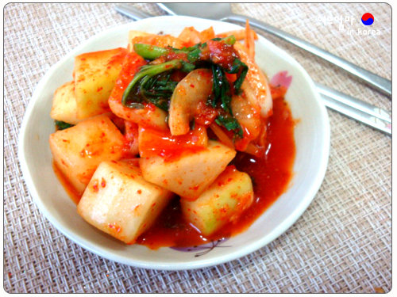

慶尚道的代表泡菜是蘿蔔塊泡菜
又可以稱為小夥子泡菜
這種蘿蔔塊泡菜適合做炒飯
那就讓我們看看要怎麼做出好吃又到地的蘿蔔塊泡菜吧!!
主料：蘿蔔 1條 (680g).蔥段 2根.蒜頭 4瓣.洋蔥 1/4塊
輔料：薑 1小塊.蘋果 1/4塊.鹽 10g.韓式辣椒粉 2T.白飯 20g.魚露 2小匙.糖 2小匙
1.蘿蔔去皮切約2x2公分方塊，放入塑膠袋內，加入鹽後用手輕輕搓揉後放入冰箱冷藏至隔天。
2.將袋中蘿蔔淺漬後的水份瀝乾。
3.將蒜頭、薑、蘋果、洋蔥、白飯、魚露、糖放入調理機將材料打成細末狀。
4.將步驟3材料倒入裝蘿蔔的袋中，加入韓式辣椒粉後收緊袋口，用手輕輕搓揉後放入冰箱冷藏2~3天即可食用。
首頁
京畿道
全羅道
心得